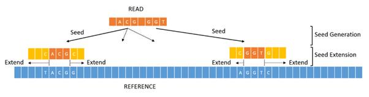

BWA-mem2 (Burrows-Wheeler Aligner) V2.3: (
https://github.com/bwa-mem2/bwa-mem2/releases
)
1.1 Indexeren: Het maakt een soort "inhoudsopgave" van het grote voorbeeld-DNA (referentie), zodat het later razendsnel informatie kan terugvinden.
1.2 Aligneren: Het pakt miljoenen losse DNA-stukjes en zoekt voor elk stukje de juiste plek.
BWA-MEM2 heeft 2 commands die wij gebruiken;
1. bwa-mem2 -p [outputfilenaam] index [p]
bwa-mem2 index bouwt een FM-index van een referentie-genoom (FASTA-bestand) wat nodig is voor snelle read mapping met BWA-MEM2.
De enige “knop” waar je hierbij aan kan draaien is het -p. Hiermee kan je de index file naam veranderen bijvoorbeeld;
bwa-mem2 -p hg38 index ref.fasta
Hiermee wordt dan de index file die gemaakt wordt hg38 genoemd. Al wordt er geen -p aangegeven krijgt de output de naam van het ref.fasta bestand.
2. bwa-mem2 -t [INT] -k [INT] -w [INT] -c [INT] ref.fa(output index) reads.fq(uit sequencer) > aln.sam (output bestand)
bwa-mem2 mem is het alignement command dat reads mapt tegen een FM-index bestand die we met de vorige stap hebben gemaakt en een SAM output genereert.
-t geeft aan hoeveel threads het programma mag gebruiken van de computer, default 1.
-k geeft aan hoeveel nucleotide moeten overeenkomen achter elkaar om een match te zijn, default 19
-w bepaalt hoe ver uit elkaar seeds (matches) mogen liggen om aan elkaar gekoppeld te worden tijdens het vormen van alignments,
zie figuur 3 het figuur hieronder.
Grotere -w verhoogt sensitiviteit voor verspreide matches (handig bij grote inserties/deleties of foutrijke reads), default 100
